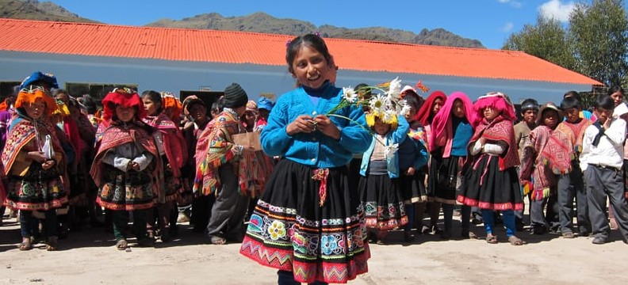

Peru Cellphone Collection Drive

Partnering with Willka T'ika Children's Fund
To deliver and connect with indigenous children in the Andean Villages, I am collaborating with the Willka T'ika Children's Fund. You can read more about their mission and founding story HERE.

We need cellphones to distribute to children in remote areas so that they can contact their teachers through the internet. Cell phones are especially needed now while we're in a pandemic. The kids don't need a fancy phone, just one that can text and call. Contact me to donate a cellphone!